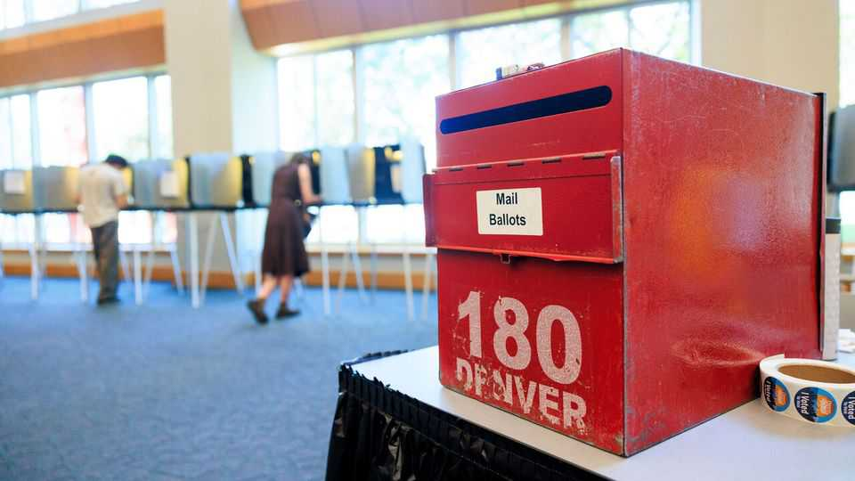
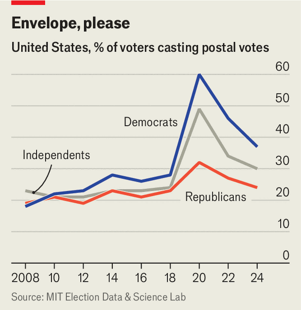

Donald Trump’s attack on mail-in voting looks doomed
A federal judge issues another blow to the president’s elections agenda

Aug 13th 2026
ABOUT A THIRD of Americans voted by mail in 2024, including roughly a quarter of Republicans (see chart). Yet nine months later Donald Trump vowed to “get rid of mail-in ballots”. The president falsely claims that fraudulent postal voting contributed to his loss in 2020. His efforts in Congress and the courts to secure new limits on this popular way of casting a ballot have, thus far, come up short. His executive order on March 31st directing the United States Postal Service (USPS) to serve as ballot gatekeeper is fizzling, too.
On August 11th a federal judge in Massachusetts blocked the main provision of Mr Trump’s order, with nationwide effect. Judge Indira Talwani noted that the president’s “unprecedented directive” is “causing confusion” among voters less than three months before the midterm elections. All 50 states offer mail-in voting, with eight conducting elections entirely by post. Despite Mr Trump’s efforts, the rules for such ballots during this election cycle are now unlikely to change.

Mr Trump’s order attempts to subject mail and absentee ballots to federal control through a complex series of lists and new postal rules. It instructs the Department of Homeland Security (DHS) to create “state citizenship lists” identifying all citizens aged 18 or over and send them to each state. States must then provide the postal service with rosters of voters eligible for those ballots, presumably after consulting the DHS lists—though the order does not specify that. Finally, states must use new, USPS-designed envelopes with special markings and bar codes. The postal service is barred from delivering ballots posted in unauthorised envelopes or by voters missing from the relevant lists.
The jumble of lists confuses even election-law experts like Derek Muller of the University of Notre Dame. “It is quite unclear to me how the various lists are supposed to interact with one another,” he says. Part of the confusion regards timing. The deadlines for the federal government sending lists to the states and the states sending lists to the USPS are both 60 days before an election, which seems to make it difficult for the former to inform the latter.
But the legal infirmity is deeper than the warped logistics. The constitution assigns states the power to set the “times, places and manner” of congressional elections and allows Congress to “make or alter” those regulations. The president gets no mention. In Ms Talwani’s words, “the executive branch has no authority to regulate elections.” Mr Trump’s policy, she argues, runs roughshod over America’s separation of powers.
The Supreme Court is mulling a request from the administration, filed on July 27th, to reverse an earlier, narrower decision by Ms Talwani. (On August 12th it filed a supplemental request asking the court to rule expeditiously.) But with election deadlines looming, the justices staying mum for more than a fortnight does not bode well for its plea, says Travis Crum, a law professor at Washington University in St Louis. And even if the Supreme Court overturns her initial ruling, Ms Talwani’s new decision—handed down in a separate case brought by voting-rights groups and Delta Sigma Theta, an African-American sorority that provides election education—would still stand in the administration’s way. Rick Hasen of the University of California, Los Angeles, reckons the executive order is “totally unworkable” and has little hope of being implemented this autumn.
Mr Trump continues to push other changes to election rules, which look similarly ill-fated. The SAVE America Act, a voter-registration bill, failed to pass the Senate before the August recess and has meagre support. Mr Trump does not rule out more drastic measures, including nationalising elections, but that move has no precedent or constitutional basis. The main achievement of these efforts, as Mr Trump probably knows, may be not a change to the rules of the midterm elections but greater distrust of their outcomes. ■
Stay on top of American politics with The US in brief, our daily newsletter with fast analysis of the most important political news, and Checks and Balance, a weekly note that examines the state of American democracy and the issues that matter to voters.